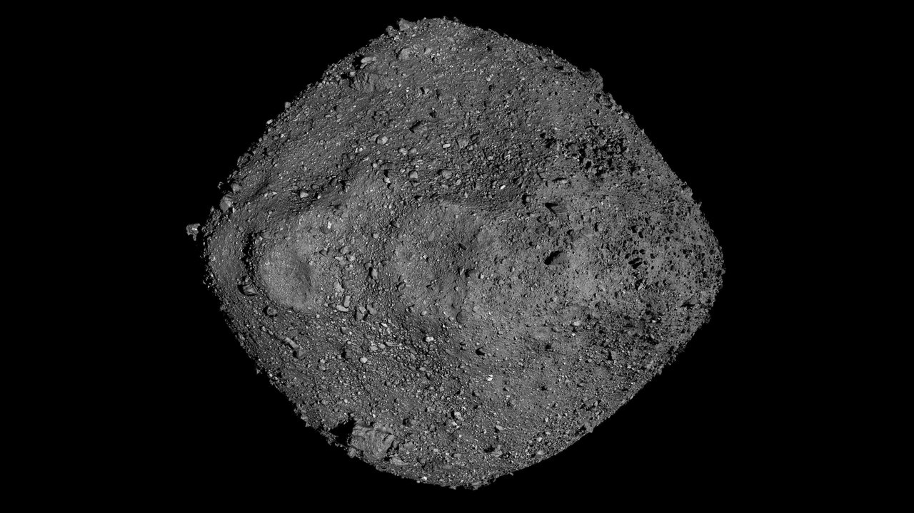

For most of this year Earth has quietly had company. A tiny space rock has been looping around the planet since about April, and almost nobody knew.
It was first spotted on August 20 by the Hungarian astronomer Krisztián Sárneczky. At the end of October the International Astronomical Union's Minor Planet Center confirmed what the numbers suggested: the object had been temporarily captured by Earth's gravity. It now has the catchy official name 2026 QQ8.
Rock or rubbish?
When something that small shows up near Earth, the first question is whether it is natural at all. Old rocket stages and other bits of space hardware sometimes get mistaken for asteroids. This time the checks came back clean, and the Minor Planet Center said no link to any known artificial object had been found.
Size estimates vary from about one to two metres across, so it is somewhere between a fridge and a small car. Experts say it poses no danger. Anything that small would burn up in the atmosphere long before reaching the ground.

Do not expect to see it. Even at its closest it stays about one and a half times farther away than the Moon, tracing a loopy path around us while both of us travel around the Sun. Its own orbit around the Sun takes about 359 days, almost exactly an Earth year, which is how it ended up drifting alongside us in the first place.
The visit is short. Depending on whose model you trust, 2026 QQ8 slips free around mid-December or early in the new year and wanders off on its own again.
It does drop by roughly once a decade. It came close in 1965 without being caught, and astronomers expect another pass in 2058, again without a capture. So if you want to wave goodbye to Earth's second moon, this holiday season is your chance.